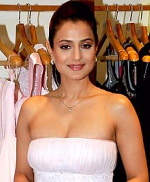
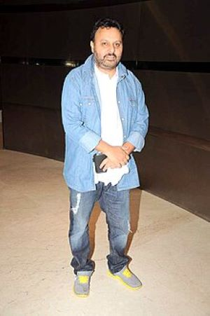
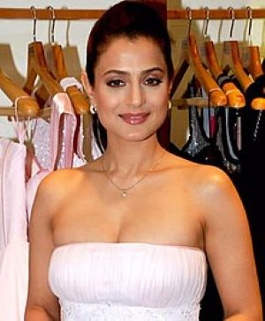
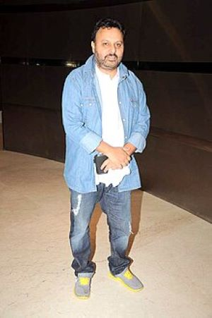

Gadar 2
About
Gadar 2 : The Katha Continues is a 2023 Indian Hindi-language period action drama film directed and produced by Anil Sharma and written by Shaktimaan Talwar. A sequel to Gadar: Ek Prem Katha (2001), it stars Sunny Deol, Ameesha Patel and Utkarsh Sharma, who reprise their roles from the previous film. 1971: Tara is now a goods supplier to the Indian Army cantonment and lives with Sakeena and Jeete, who soon leaves for Chandigarh for his college studies. One day, Tara is contacted by Lt. Colonel Devendra Rawat for help in supplying Indian soldiers with weapons as a skirmish is taking place with the Pakistani soldiers at the border, during the Third India Pakistan War. During the Indo-Pakistani War of 1971, Tara Singh returns to Pakistan in order to rescue his imprisoned son Charanjeet "Jeete" Singh.
Budget ₹60 crore
Box office ₹691.08 crore
Cast
 


